Assignment 3.1 A Visit to Recursia¶
You have set sail for Recursia, a land famous for its flag, its mountains, its language, and its temple. Your journey will take you on a grand tour of the skills and techniques necessary to solve problems recursively.
This assignment has one debugger exercise and three coding components and you have seven days to complete it. This assignment will be manageable if you start early and make slow and steady progress. Here’s a recommended timetable:
Complete the Flag of Recursia within one day of this assignment going out.
Complete the Mountains of Recursia within two days of this assignment going out.
Complete Speaking Recursian within four days of this assignment going out.
Complete the Temple of Recursia within seven days of this assignment going out.
As always, feel free to get in touch with us if you need any assistance. We’re happy to help out!
Starter Files¶
We provide a ZIP of the starter project. Download the zip, extract the files, and open the project in VS Code.
2D Graphics Primer¶
This assignment will require you to work with 2D graphics. Here’s a quick overview of what you need to know.
Our graphics code uses the standard 2D coordinate system used throughout computing. The upper-left corner of the window is at position \((0, 0)\), with the \(x\) axis running from left to right and the \(y\) axis running top to bottom. Just like the normal Cartesian coordinate system, \(x\) values increase as you move from left to run. However, \(y\) values increase from top to bottom, so \(y\) values get larger as you move down the screen. Here’s a visual showing how this works:
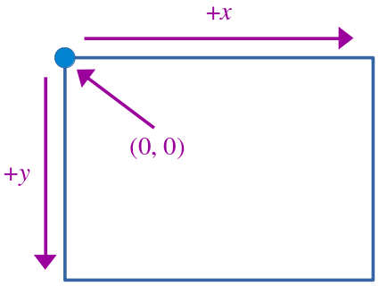
Overview of the graphics system¶
You will need to work with two custom types in the course of this assignment. The first type is a Point struct, shown here:
struct Point {
int x;
int y;
}
The Point type just stores an x and y coordinate. You can define and manipulate Points like this:
/* The point (137, 42). */
Point pt;
pt.x = 137;
pt.y = 42;
cout << pt << endl; // Prints { 137, 42 }
/* We can also define points like this. */
Point otherPt = { 137, 42 };
We use the int type when working with Points because the display is broken down into individual pixels at discrete coordinates.
The other type you’ll need is the Rectangle type, defined here:
struct Rectangle {
/* Coordinate of the upper-left corner of the rectangle. */
int x, y;
/* Dimensions of the rectangle. */
int width, height;
};
We define the rectangle with an \((x, y)\) point in space denoting the rectangle’s upper-left corner, along with the width and height of the rectangle. For example, here’s how to make a rectangle whose upper-left corner is \((100, 20)\) and whose lower-right corner is \((150, 50)\):
Rectangle rect;
rect.x = 100;
rect.y = 20;
rect.width = 50;
rect.height = 30;
/* We can also do this: */
Rectangle rect2 = { 100, 20, 50, 30 };
Part One: The Flag of Recursia¶
As your ship nears the coastline, your first indicator that you’ve arrived in Recursia is the large number of Recursian flags flying above its stately buildings. The Flag of Recursia, shown below, is designed in the style of Islamic girih patterns:
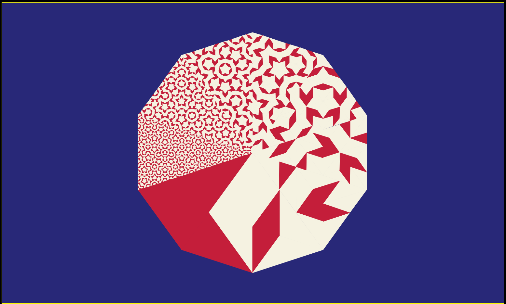
Wow! What a pretty flag.¶
In this part of the assignment, you’ll use the debugger to trace through a working implementation of a drawFlagOfRecursia function that draws the Flag of Recursia. In doing so, you’ll learn how to use the debugger to walk through recursive functions, an invaluable skill that will enable you to tease out gnarly bugs in tight recursive code. To clarify, you will not write any code for this portion of the assignment.
Let’s begin with an overview of how the flag is designed. The intricate patterns on the flag are constructed entirely from triangles. Specifically, the figure is made of two different shapes of isoceles triangles. The first one, which we call the acute triangle, has an apex angle of \(36°\). The other, the obtuse triangle, has an apex angle of \(180°\).[1] They’re shown below:
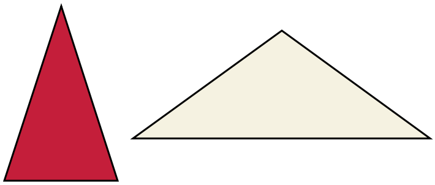
The acute and obtuse triangles.¶
The acute triangle on the left is drawn cardinal red, while the obtuse triangle on the right is drawn sandstone white.
These two triangles are chosen because they can each be subdivided into a combination of smaller acute and obtuse triangles. Specifically, the red acute triangle can be subdivided into one acute and one obtuse triangle, and the white obtuse triangle can be subdivided into two obtuse triangles and one acute triangle. This is shown here:
Subdividing each triangle.¶
By starting with an acute triangle or obtuse triangle and repeatedly subdividing, we obtain more and more intricate figures, as shown here:
Really subdividing the triangles.¶
Flag of Recursia is then formed from a wheel of ten acute triangles, each subdivided at a different level. Here’s the central figure of the flag with with the ten triangles marked out:
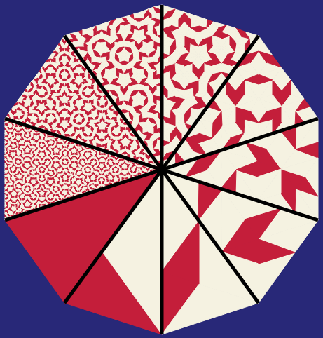
The center of the flag, subdivided into pieces.¶
Now that you’ve seen how the flag is structured, let’s walk through the code that draws it in the debugger.
What You Need To Do¶
We’ve provided you with a FlagOfRecursia.cpp file, which includes a complete working implementation of the following function:
int drawFlagOfRecursia(const Rectangle& bounds);
This function takes as input a 2D rectangle on screen where the Flag of Recursia should be drawn, then draws the flag there and returns the number of triangles drawn. To familiarize yourself with the starter program, run the “Flag of Recursia” demo from the main program. Click the “Go!” button to draw the flag, and marvel at how effective the recursion is at drawing such a complex figure.
Now, let’s bust out the debugger. Do the following:
Open
FlagOfRecursia.cppand set a breakpoint on line 119 inside ofdrawFlagOfRecursia.Run the program in debug mode, choose the “Flag of Recursia” option from the menu at the top of the program. Don’t click the “Go!” button yet.
Resize the program and VS Code windows so that they’re visible at the same time. (When the debugger engages, it halts execution of the running program so that you can inspect what’s going on. This means the graphics window might not be operational – you might find that you can’t drag it around, or resize it, or move it, etc.)
Click the “Go!” button in the demo program to trigger the breakpoint.
If you’ve done everything correctly, at this point you’ll see a yellow arrow pointing at the line containing the breakpoint, and the local variables panel will pop up. Investigate the pane in the debugger that shows local variables and their values. Because numTriangles has not yet been initialized, its value is unspecified; it might be 0, or it might be a random garbage value. The same is true of center and decagonPoints. However, you should be able to inspect the bounds parameter. Clicking the dropdown triangle next to its name will reveal the position and dimensions of the rectangle to fill in.
You should now be able to answer the following question. To do so, edit the file DebuggerAnswers.txt with your answers:
Question 1
Some function in our starter code called drawFlagOfRecursia. What file was that function defined in, and what was the name of that function? (Hint: use the call stack!)
The debugger has a control panel that allows you to manually advance through code one step at a time once you’ve hit a breakpoint. The control panel looks like this:
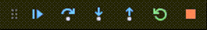
Screenshot of step controls from VS Code debugger¶
The six icons from left to right are the controls for Continue, Step Over, Step Into, Step Out, Restart and Stop. If you hover the mouse over an icon in VS Code, a tool tip will pop up with a label to remind you of which control is which.
You will now use the Step Over button to execute this function one line at a time. As a reminder from Assignment 0, the Step Over button tells the debugger to execute the current line of code. Each time you click it, the program will run the current line and move to the next. There’s no way to “rewind” the program back to where it was before; think of “Step Over” as a way of hitting “unpause” followed by a quick “pause” once you hit the next line.
To see Step Over in action, do the following:
Press Step Over to execute Line 119.
decagonPointswill now contain ten items, which you can inspect in the Locals pane. The yellow cursor should now point at Line 120.Press Step Over to execute Line 120.
centerwill now have itsxandyfields set. The yellow cursor should now be at Line 121.Press Step Over to execute Line 123.
numTriangleswill now have the value 0.Repeatedly press Step Over to execute the triangle-drawing loop one line at a time. Each time you Step Over through Line 132’s call to
drawAcuteTriangle, you should see one more wedge of the Flag of Recursia drawn to the graphics window. You will also see the value ofnumTrianglesupdate whenever you Step Over line 133.Once the cursor reaches Line 136, stop clicking Step Over.
You should now be ready to answer the following question in DebuggerAnswers.txt.
Question 2
How many total triangles did the drawFlagOfRecursia function draw?
We’ll now see how to use the Step Into and Step Out buttons. To do so, we’ll need to restart the program. Do the following:
Hit the red “stop” button from the debugger control panel. The program will stop running.
Run the program again with the debugger engaged.
Click “Flag of Recursia” from the top menu.
Resize the program window and Qt Creator so that both are visible.
Click the “Go!” button to engage the debugger.
If you’ve done everything correctly, the debugger will engage and the yellow cursor will be pointing at Line 119.
The Step Over button runs the current line of the program. We are now going to use the Step Into button. When you click Step Into, the debugger will enter whatever function is being called on the current line of the program. This allows you to inspect what’s going on inside a called function. (If the current line is not a function call, Step Into and Step Over do the same thing.)
Do the following:
Click Step Into to enter the
placeDecagonInfunction. If you’ve done this correctly, the yellow cursor will now be in theplaceDecagonInfunction.
As you can see, we are now inside the placeDecagonIn function. You could, if you wanted to, use Step Over to walk through this function one line at a time. We aren’t interested in this function for now, though, and clicking “Step Over” repeatedly would take a long time.
To get out of this function and return to drawFlagOfRecursia, we’ll use the Step Out button. The Step Out button tells the debugger to let the current function finish running, then pause the program again once we reach the spot where that function was called. It’s a good way to get the debugger to quickly finish the current function and get back to the caller in the event that you entered a function you didn’t mean to.
Do the following:
Click Step Out once. You should be back inside
drawFlagOfRecursia.Use Step Over until the yellow cursor is pointing at Line 126.
Press Step Into. You should end up at some very strange looking code inside
vector.h.
It’s common, when using Step Into, for the debugger to descend into code you didn’t write and didn’t intend to debug. When this happens, remember that you can always press Step Out to leave that function and back up a level.
With that in mind, do the following:
Press Step Out to return to
drawFlagOfRecursia.Press Step Over repeatedly until the cursor reaches Line 132 on the seventh iteration of the
forloop, which happens wheni = 6.Press Step Into to enter the code for
drawAcuteTriangle.
If you have done everything correctly at this point, you should be inside drawAcuteTriangle and the order parameter should be 6.
The code in drawAcuteTriangle makes two calls: one recursive call to drawAcuteTriangle, and one other call to drawObtuseTriangle. Each time those functions are called, more triangles will be drawn on the screen, and the value of trianglesDrawn will increase.
Your task is to determine how many triangles the recursive call to drawAcuteTriangle on Line 45 makes. Use the debugger controls however you’d like to accomplish this. Then, answer the following question:
Question 3
How many triangles did the recursive call to drawAcuteTriangle make? We are specifically interested in the recursive call made on Line 45.
At this point, you can continue to use the debugger to explore what’s going on. Do your own tracing and exploration to solidify your understanding of recursion and its mechanics. Watch the triangles being drawn and consider how this relates to the sequence of recursive calls. Observe how stack frames are added and removed from the debugger call stack. Select different levels on the call stack to see the value of the parameters and the nesting of recursive calls. Here are some suggestions for how stepping can help:
Stepping over a recursive call can be helpful when thinking holistically. A recursive call is simply a “magic” black box that completely handles the smaller subproblem.
Stepping into a recursive call allows you to trace the nitty-gritty details of moving from an outer recursive call to the inner call.
Stepping out of a recursive call allows you to follow along with the action when backtracking from an inner recursive call to the outer one.
Part Two: The Mountains of Recursia¶
Having studied the Flag of Recursia, the next sight that catches your eyes are the great Mountains of Recursia. These mountain ranges dominate the skyline and look like this:
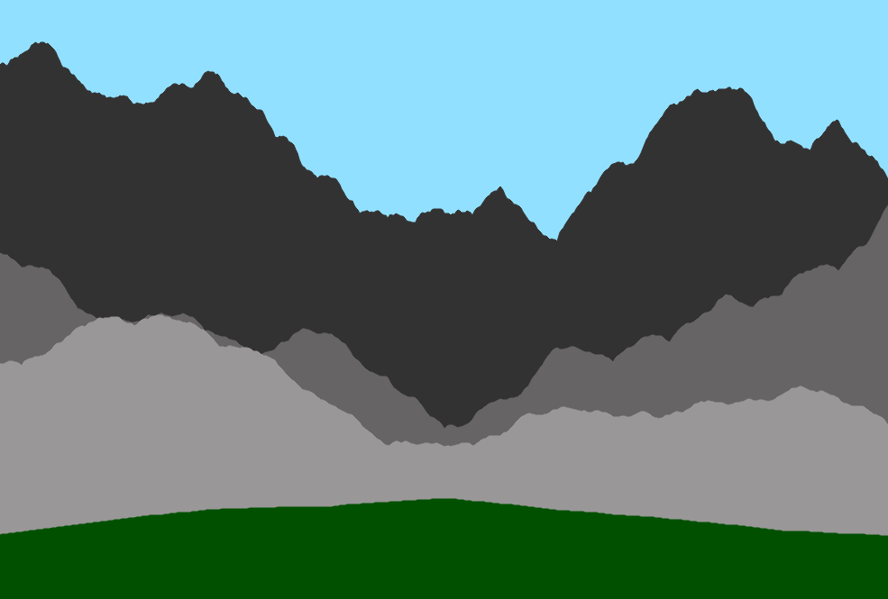
The contours of these mountains are constructed using a simple recursive algorithm. Here’s how it works. We begin with two points in 2D space called the left and right points. We then compute the midpoint of those two points. Next, we adjust the vertical (y) component of the midpoint by a random amount, either by shifting it up (negative y direction) or down (positive y direction). This will create the texture of the mountain range. Finally, we repeat this process recursively by constructing two smaller mountain ranges: one from the left point to the adjusted midpoint, and one from the adjusted midpoint to the right point. Here is an animation showing these steps:
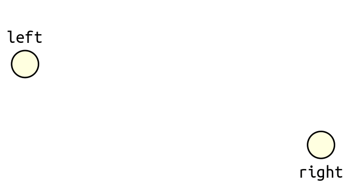
As our base case, if we need to construct a mountain range between a left and right point that are “sufficiently close,” we simply form the mountain range as a straight line from left to right. Specifically, if the difference in the x coordinates between right and left is three or less, we make a line directly from left to right with no intervening points.
Your task is to write a function
Vector<Point> makeMountainRange(const Point& left,
const Point& right,
int amplitude,
double decayRate);
that works as follows. The left and right parameters are the locations of the left and right points described above. The amplitude parameter indicates how much vertical offset might will be added to the midpoint. Specifically, after you’ve computed the midpoint of left and right, you should adjust the midpoint’s y coordinate by adding a random integer between -amplitude to +amplitude, inclusive.
The last parameter, decayRate, changes the amplitude as the recursion unfolds. Specifically, when you recursively construct the two smaller mountain ranges, you should use as your amplitude the value amplitude * decayRate. If decayRate is 1, then each smaller mountain range has the same amplitude as the overall mountain range, giving extremely jagged peaks. If decayRate is smaller than 1, each sub-mountain-range will have progressively smaller amplitude, giving a smoother look.
In lecture, and in Part One of this assignment, the graphical recursive functions we wrote drew directly on the screen. The makeMountainRange function works differently. Instead of drawing anything to the screen, it returns a list (Vector) of the points that make up the contour of the mountain range. This Vector contains the left and right points, plus the adjusted midpoints formed as the recursion unfolds. These points should be sorted from left to right by their x coordinates so that if they’re followed from left to right, they trace out the ridgeline.
Why return the points rather than drawing them? There are two main reasons. First, this makes it easier to test your code. You can store the generated mountain range as Vector<Point> and then inspect the points in test cases to ensure they’re in the right place. If we instead just drew the points onto the screen, we wouldn’t be able to do this. Second, getting the points as Vector gives us more flexibility with how we draw the points. We can directly connect them with lines, or fill the region beneath them with a color, or use smooth curves between them, or change the colors of the lines between them, etc., all based on our use case.
One final detail about makeMountainRange: the function should call error() to report an error if any of the following are true:
The
leftpoint is to therightof therightpoint. (It’s okay if they have the samexcoordinate.)The
amplitudevalue is negative.The
decayRateparameter is negative or greater than one.
To summarize, here’s what you need to do:
Mountains of Recursia Requirements
Implement the function
makeMountainRangein the fileMountainsOfRecursia.cpp.Run our provided tests to check whether your implementation works correctly.
(Optional) Choose the “Mountains of Recursia” demo from the top-level menu to see what your code produces. Drag the two circles to change the left and right points of the range, adjust the sliders to your desired parameters, and click the button to generate a new mountain range.
Some notes on this problem:
You must implement
makeMountainRangerecursively. Loops are permissible, but your function must be recursive.You may want to use some of the functions from the
"random.h"header file. Check out the documentation for more details.You are welcome to make
makeMountainRangea wrapper function if you’d like. (More generally, unless stated otherwise, any time we ask you to write a function, you can make it a wrapper function and introduce as many helper functions as you’d like.) However, many solutions to this problem will not require a wrapper, so don’t feel compelled to write one.As a refresher, the midpoint of the two points \((x_0, y_0)\) and \((x_1, y_1)\) is given by the formula \((\frac{x_0 + x_1}{2}, \frac{y_0 + y_1}{2})\).
The
Pointtype usesints for its coordinates rather thandoubles. If you try computing the midpoint of, say, \((3, 3)\) and \((10, 10)\), this means you cannot store the true midpoint \((\frac{13}{2}, \frac{13}{2})\) exactly. You don’t need to worry about this.Each of the two recursive calls you make will return a
Vector<Point>containing the points making up the smaller mountain range. Importantly, the last point of theVectorfrom the left subrange and the first point of theVectormaking up the right subrange will both be the midpoint. However, theVectoryou ultimately will return should only include one copy of the midpoint.You should not need to do anything fancy to sort the points in your returned
Vectorfrom left to right.
Part Three: Speaking Recursian¶
You’ve disembarked at Recursia’s main port and your hosts are happy to receive you! They only speak the local language, Recursian. Fortunately, you’ve already taken the time to learn the language, and you’d like to show off your skills.
Recursian is a Polynesian language. There are three vowels and six consonants in Recursian:
Vowels:
e i uConsonants:
b k n r s '
Note that the ' character is a consonant in Recursian; it’s a common feature of Polynesian languages.[2]
Words in Recursian consist of zero or more syllables. Each syllable consists of a consonant followed by a vowel. There is one exception - the first syllable in a Recursian word can consist of a single vowel. So, for example, "ke'ubiku" is a four-syllable word (ke, 'u, bi, ku) and "ukeke'ubi" is a five-syllable word (u, ke, ke, 'u, bi).[3] And in fact, every string that meets these requirements is considered a word in the Recursian language.
Write a function
Vector<string> allRecursianWords(int numSyllables);
that takes as input a number of syllables, then returns a Vector<string> consisting of every possible Recursian word that can be made with the given number of syllables. The order of the words within that Vector doesn’t matter, but every word should appear once and only once. The value of numSyllables may be zero, but if it’s negative, call error to report an error.
This is a recursive enumeration problem and will require you to combine loops and recursion together. You do not need to write a lot of code, but you will need to be intentional with how you proceed. Here are some hints to get you thinking along the right lines:
You can fill in a syllable with any combination of a consonant and a vowel (or, if it’s the first syllable, with any vowel). Use recursion to explore each possible combination to see what you find.
Draw out a decision tree before you start coding anything up. The decision tree here won’t exactly match subsets or permutations, but many of the insights from those problems will still be applicable here.
Think about the general pattern we’ve seen: keep track of what decisions you have made so far and what decisions you haven’t made yet.
We have provided you with a good range of test cases, but we haven’t covered everything. You will need to write at least one custom test case.
To summarize, here’s what you need to do:
Speaking Recursian Requirements:
Implement the
allRecursianWordsfunction inSpeakingRecursian.cpp.Add at least one custom test case, then test your code thoroughly using our provided tests.
(Optional) Run the demo app to see what the Recursian language looks like.
Some notes on this problem:
You must implement this function recursively. Loops are permissible, but your function must be recursive.
The order in which you return the words does not matter, as long as every word appears once and exactly once.
The empty string is considered a word with zero syllables.
All letters in the word you return should be lower-case.
A Fun and Endearing Quirk of C++ that you may (or may not) encounter when coding this one up: in C++, addition is left-associative, so
a + b + cis interpreted asa + (b + c). Ifch1andch2arechars andsis a string, this means thatch1 + ch2 + sis grouped as(ch1 + ch2) + s, which does not mean “concatenatech1, thench2, thens” and instead means “take the internal numeric values ofch1andch2, add them together to form anint, then try to concatenate that withs.” This will result in a compile-time error. You can get around this by explicitly adding parentheses asch1 + (ch2 + s).There are lots of Recursian words. Specifically, for any \(n \geq 1\), there are exactly \(21·18^{n-1}\) words. To put that in perspective, this means that there are \(14,431,090,114,56\) ten-syllable Recursian words, way more than can fit into your computer’s memory. We won’t call your function on inputs that big, and if you’re writing your own test cases, we don’t advise calling this function on inputs larger than five.
Our test coverage is designed to help you identify bugs in your code, but it is not fully comprehensive. Read over the tests we have and think through what we do and don’t cover. You need to write at least one test case, and choosing it to cover a gap in our tests will make it far less likely that your code contains an error.
Part Four: The Temple of Recursia¶
Your hosts on Recursia are delighted to hear that you want to visit the island’s grandest attraction, the famed Temple of Recursia. The Temple of Recursia is a massive temple designed in Khmer style. Here’s a photo:
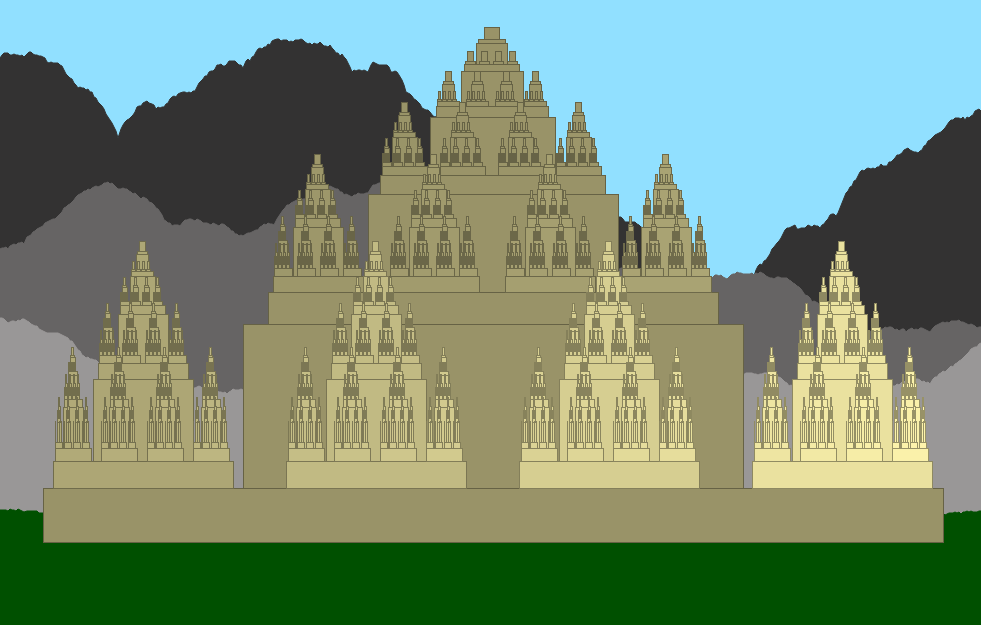
Your task is to implement a function
Vector<Rectangle> makeTemple(const Rectangle& bounds,
const TempleParameters& params);
that takes as input the bounding box into which to draw the temple (bounds) and some information about the size and shape of the temple (params, described later), then returns a Vector<Rectangle> consisting of all the rectangles that make up the temple. As was the case in Part Two of this assignment, this function returns the rectangles to be drawn and does not actually draw anything on the screen.
To help you code this one up, we’ve broken the task down into four smaller milestones. As you work through these milestones, you’ll add increasing levels of detail to the temple, concluding with the intricate picture shown above.
Milestone One: Make the Base¶
The makeTemple function takes as input a Rectangle called bounds denoting where the temple should be drawn. The first step in creating the temple is to draw the temple base. This is a rectangle that is flush against the bottom of the bounding box and centered horizontally. Schematically, it looks like this:
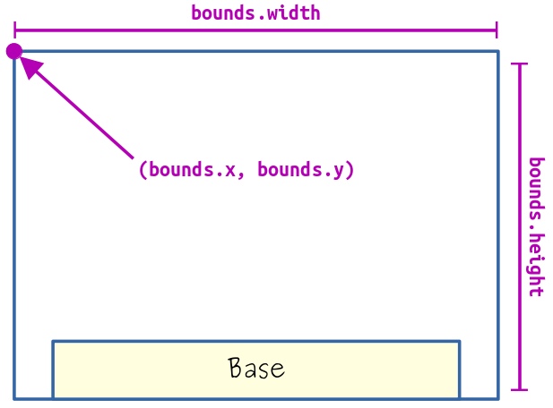
How big should the base be? To determine this, we’ll look to the second parameter to makeTemple, which is an object of type TempleParameters. This is a struct that contains information determining the relative sizes and shapes of the pieces of the temple. It’s defined in the "TempleOfRecursia.h" header file. If you open that header file now, you’ll see that there are a lot of different data members defined inside TempleParameters. Don’t worry - you are not expected to understand all of them right now. Instead, as you work through the milestones, we will incrementally describe more and more of the fields.
For this milestone, you will need to read the following fields of TempleParameters, which give information about how wide and tall the base of the temple should be:
struct TempleParameters {
/* How wide is the base, relative to the width of the bounding box? */
double baseWidth;
/* How tall is the base, relative to the height of the bounding box? */
double baseHeight;
/* Other fields you won't need to reference yet. */
};
Here, baseWidth dictates how wide the base is. It’s specified as a real number (a double) between 0 and 1 representing the fraction of the width of the bounding box dedicated to the base. So, for example, if params.baseWidth is 0.5, it means that the width of the base of the temple is half the width of the bounding box. If params.baseWidth is 1.0, it means the width of the base is the same as the width of the bounding box. Similarly, baseHeight says how tall the base is, expressed as a real number between 0 and 1 indicating how tall the base is relative to the bounding box. If params.baseHeight is 0.25, for example, then the base is 25% the height of the bounding box. Regardless of its size, the base should be positioned flush against the bottom of the bounding box and centered horizontally.
As your first milestone, write code in makeTemple that returns a Vector<Rectangle> holding a single rectangle representing the base of the temple. Specifically, you should do the following:
Milestone One Requirements
Write code in
makeTempleto return aVectorconsisting of just the base of the temple.Run our provided tests to validate your code. You should pass all the tests for Milestone One but fail the remaining tests.
Some notes on this problem:
Draw pictures! To complete this milestone, you will need to do some algebra to determine the \(x\) and \(y\) coordinates of the base. This is a lot easier to do if you draw a picture and annotate it with positions in space.
The
Rectangleyou get as theboundsof the temple does not necessarily need to have its upper-left corner at the origin (0, 0). There are also no constraints on how wide or tall it will be, except that you can assume its width and height are positive.The
Rectangletype usesintcoordinates, which can lead to rounding errors. For example, if the width of the bounding rectangle is 33 and the base ends up being 20 pixels wide, then you can’t perfectly center it horizontally. For the purposes of this assignment, our test cases assume that you will use the default C++ behavior of rounding toward zero.You can assume that
baseWidthandbaseHeightare between 0 and 1, inclusive. You don’t need to callerror()if this is not the case.You do not need to use recursion just yet. That will come up in Milestone Three.
Milestone Two: Make the Column¶
You now have the base of the Temple of Recursia. Sitting on top of the base is a column. Here’s a schematic showing where the column is in relationship to the bounding box and the base:
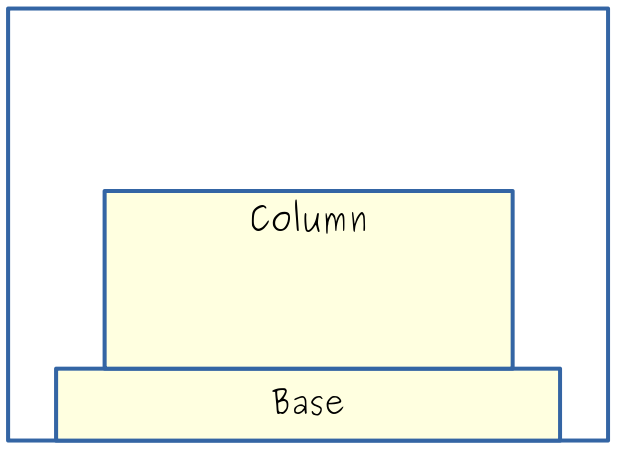
Like the base, the column is centered horizontally. Whereas the base was flush against the bottom of the bounding rectangle, the column is flush against the top of the base.
To determine how wide and tall the column should be, you’ll need to look inside TempleParameters:
struct TempleParameters {
/* How wide is the base, relative to the width of the bounding box? */
double baseWidth;
/* How tall is the base, relative to the height of the bounding box? */
double baseHeight;
/* How wide is the column, relative to the width of the bounding box? */
double columnWidth;
/* How tall is the column, relative to the height of the bounding box? */
double columnHeight;
/* Other fields you won't need to reference yet. */
};
As with the base, the width and height of the column are proportional fractions of the width and height of the bounding box. The exact proportions are given by the columnWidth and columnHeight fields of TempleParameters.
Update makeTemple so that it returns a Vector<Rectangle> containing two rectangles, the base and the column, in that order.
Milestone Two Requirements
Update
makeTempleto return aVectorcontaining the base and the column, in that order.Run our provided tests to validate your code. You should pass all the tests for Milestone Two but fail the remaining tests.
Some notes on this problem:
As you add code to an existing function, you may find it helpful to refactor your code by writing new helper functions. Otherwise, your function will start to get longer and more error-prone.
As with the previous milestone, you don’t need to worry about rounding errors arising from multiplying
ints anddoubles.It’s technically possible for you to get “silly” values of the
columnWidthandcolumnHeightparameters. For example, the column might be wider than the base, or the combined height of the base and the column might exceed the height of theboundsparameter. You do not need to callerror()in these cases; just create rectangles of the appropriate proportions even if those proportions are silly.You do not need to use recursion yet. That will show up in the next milestone.
Milestone Three: Recursively Stack Temples¶
As its name suggests, the Temple of Recursia’s architecture is recursive. In particular, there’s a smaller, upper copy of the temple sitting on top of the column. The position of the bounding box for this upper temple is shown here:
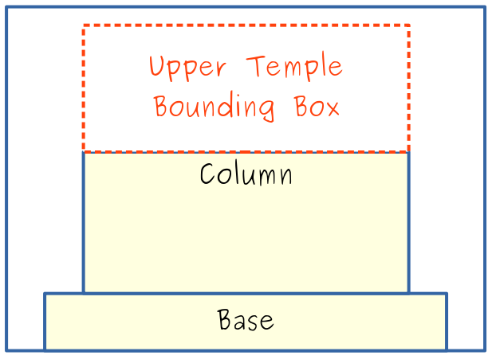
The upper temple’s bounding box has the same width as the column and should be placed flush on top of the column. To determine the height of the bounding box for the upper temple, you’ll need to use another field of the struct TempleParameters:
struct TempleParameters {
/* How wide is the base, relative to the width of the bounding box? */
double baseWidth;
/* How tall is the base, relative to the height of the bounding box? */
double baseHeight;
/* How wide is the column, relative to the width of the bounding box? */
double columnWidth;
/* How tall is the column, relative to the height of the bounding box? */
double columnHeight;
/* How tall is the upper temple, relative to the height of the bounding box? */
double upperTempleHeight;
/* Other fields you won't need to reference yet. */
};
This is a relative height field, like baseHeight and columnHeight, giving the fraction of the height of the bounding box to use when sizing the upper temple’s bounding box.
As the name “Temple of Recursia” suggests, the upper temple is a smaller copy of the original temple, which means that there may be an even smaller temple sitting atop the upper temple, and there might be another temple sitting atop that, etc. To control how many levels of temples there are, you’ll need to make use of the order field in TempleParameters:
struct TempleParameters {
/* How wide is the base, relative to the width of the bounding box? */
double baseWidth;
/* How tall is the base, relative to the height of the bounding box? */
double baseHeight;
/* How wide is the column, relative to the width of the bounding box? */
double columnWidth;
/* How tall is the column, relative to the height of the bounding box? */
double columnHeight;
/* How tall is the upper temple, relative to the height of the bounding box? */
double upperTempleHeight;
/* Order of the figure. An order-0 temple is nothing at all. An order-n
* temple is a base and column with an order-(n-1) temple placed on top
* of it.
*/
int order;
/* Other fields you won't need to reference yet. */
};
You will need to update your implementation of makeTemple so that it properly handles the order parameter. Specifically:
If
orderis negative, callerror()to report an error.If
orderis zero, there is nothing to draw and you should return an emptyVector.If
orderis positive, make the base and column as before, then make an up temple of orderorder - 1on top of its column.
The Vector you return should have its rectangles in the following order: first the base, then the column, and then all the rectangles from the upper temples.
To summarize, here’s what you need to do:
Milestone Three Requirements
Change
makeTempleso that it recursively stacks temples atop one another as described above.Run our provided tests to validate your code. You should pass all the tests for Milestone Three but fail the remaining tests.
Some notes on this problem:
As you’re adding more functionality, your
makeTemplefunction may start to get on the long side. Decomposition is your friend here. If your code is getting lengthy, split it apart into multiple smaller functions.It is possible that the upper temple height will be so large that it extends beyond the top of the
boundsbox (for example, ifbaseHeightis 0.2,columnHeightis 0.4, andupperTempleHeightis 0.6). You don’t need to worry about this case, and it’s okay if your temple overflows out the top of its bounding box.Do not modify the function signature for
makeTempleby adding, removing, or changing parameters. However, you are free to makemakeTemplea wrapper function if you would like.While you cannot modify the
TempleParametersobject passed intomakeTemple, you can create your ownTempleParametersvariable that’s a copy of it by writing something to the effect ofTempleParameters newParams = params;and then modify the new parameters.If you get back different rectangles than the ones in the test cases, we recommend getting out a sheet of paper and working through the examples from the test case by hand. By doing the algebra yourself to position everything, you can see where things should be and why, and can use that to better diagnose any incorrect positions.
The debugger is your friend here. If your code produces the wrong rectangles, set a breakpoint and use a mix of “step over” and “step into” to figure out where things are going wrong. Proceed slowly. If you’ve worked out on a sheet of paper where all the rectangles should be for a given example, you can read the local variables window to make sure that the positions you’re calculating match what they’re supposed to be.
Milestone Four: Add Smaller Temples¶
Your Temple of Recursia is now shaped like a single spire: there’s a base and column, topped with a base and column, topped with another base and column, etc. To make the temple truly grand, we’ll add one last architectural feature: a series of smaller temples sitting on top of the base and in front of the column. The smaller temples should be positioned so that they are evenly-spaced across the top of the base. Here are examples of where the smaller temples would go, based on whether there are 2, 3, or 4 smaller temples:
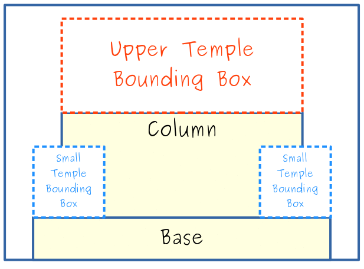
To determine how many small temples there should be, as well as how large they are, we’ll need the final three fields of TempleParameters:
struct TempleParameters {
/* How wide is the base, relative to the width of the bounding box? */
double baseWidth;
/* How tall is the base, relative to the height of the bounding box? */
double baseHeight;
/* How wide is the column, relative to the width of the bounding box? */
double columnWidth;
/* How tall is the column, relative to the height of the bounding box? */
double columnHeight;
/* How tall is the upper temple, relative to the height of the bounding box? */
double upperTempleHeight;
/* Order of the figure. An order-0 temple is nothing at all. An order-n
* temple is a base and column with an order-(n-1) temple placed on top
* of it.
*/
int order;
/* How many smaller temples are there? (Will always be at least two.) */
int numSmallTemples;
/* How wide is each smaller temples, relative to the width of the bounding box? */
double smallTempleWidth;
/* How tall is each smaller temples, relative to the height of the bounding box? */
double smallTempleHeight;
};
Although in the above examples we talked about there only being 2, 3, or 4 smaller temples, your function should support any number of smaller temples greater than or equal to two. Each small temple should be positioned directly on top of the base and spaced apart evenly. The rectangles from the temples should be added to the result Vector after the rectangles from the upper temple, and ordered from left to right.
Like the upper temple, each smaller temple’s order should be one less than the order of the overall temple figure. For example, an order-5 temple would have order-4 small temples along its base.
It is possible - and, one could argue, desirable - that the rectangles from the small temples overlap the center column and the upper temple. This gives the temple more of a three-dimensional look, corresponding to the temple being laid out as a central spire ringed by smaller shrines.
Here’s what you need to do:
Milestone Four Requirements
Change
makeTempleso that it adds smaller temples along the baseline, as described above.Run our provided tests to validate your code. You should pass all the tests at this point.
(Optional) Choose the “Temple of Recursia” option from the top-level menu to see your creation and adjust the parameters.
Some notes on this problem:
Grab a sheet of paper and a pencil and draw some pictures to work out the coordinates of all the smaller temples. We recommend calculating the spacing between the temples.
You should assume that the small temples will not overlap one another horizontally, though in practice that won’t necessarily be the case. If you’ve correctly worked out the math for the spacing between the smaller temples, your code will naturally (and aesthetically!) handle overlapping temples nicely.
You can assume there will always be at least two smaller temples and don’t need to handle the case where this isn’t true.
As with the previous sections, if you would normally need to store a fractional coordinate (for example, if an \(x\) coordinate for a small temple is supposed to be 11.5), it’s okay to round down when converting to an
int.As in Milestone Three, if you are failing any test cases, work through that test case on a sheet of paper by hand to see where the rectangles should be. Then, use the debugger to walk through your code (use “step into,” “step over,” and “step out” to navigate the recursive calls) and see which coordinates you’re getting right and which coordinates are incorrect.
If you have a compound expression in which you’re mixing
ints anddoubles while performing division, make sure that you group the terms appropriately. For example,double1 * (int1 / int2)will do integer division (rounding down), but(double1 * int1) / int2will do real-valued division because the numerator is adouble.
(Optional) Part Five: Take in the View!¶
The very last menu option in our provided app, the Grand View of Recursia, shows off the Temple of Recursia situated in a landscape surrounded by the Mountains of Recursia. Once you’ve gotten everything working and all the tests are passing, choose that option to marvel at how beautiful your recursive creations are. Isn’t that something? Now compare the intricasies of the image to how much code you wrote. Recursion is an incredibly powerful tool for describing and modeling complex structures in an incredibly small space!
(Optional) Part Six: Extensions¶
Each part of this assignment is designed to give you a sense of what’s possible with recursion. If you want to take these ideas and run wild, go for it! Here are some suggestions of ideas to try out if you want to keep exploring.
As with all assignments, if you want to submit extensions, please submit two separate versions of your assignment: one without extensions that meets our requirements, and one with extensions that does whatever you’d like.
Flag of Recursia: The particular pattern of triangles used in the flag are a type of Penrose tiling; they can tile indefinitely in all directions without ever repeating the same pattern. They’re not the only way to tile space this way. Look up other ways of tiling space and see what sorts of geometric designs you can come up with.
Do you think you have a better design for a Flag of Recursia? Feel free to throw away our flag and come up with something even better.
Mountains of Recursia: The algorithm we had you code up to make the mountain range is an example of a terrain generation algorithm. There are lots of other terrain features you can generate using recursion - coastlines, trees, dunes, water waves, etc. Research and code up one of those algorithms. Alternatively, is there a way to adjust the algorithm we provided you so that it still makes a nice 2D mountain range, but does so more realistically?
The mountain generation function you wrote creates the contour of the top of the mountain range. Real mountains have more detail in them: snowy peaks, treelines, rock cliffs, etc. Can you update your function to incorporate these details in a realistic way?
Speaking Recursian: Because words in Recursian are made of fixed syllables, and there are only finitely many syllables, it should be possible in principle to create sound clips for each syllable and then create a program that can speak Recursian words aloud. Can you make something like this?
The rules about syllable construction in Recursian are very simple phonotactic rules. Could you introduce other rules into Recursian about what sorts of syllables are allowed in relationship to one another? If so, how would the two recursive functions you wrote need to change?
If you’re into linguistics, could you come up with a grammar and syntax for Recursian that (of course) has a nice recursive structure to it? If so, could you use that to define what a “Recursian sentence” would be, and then generate sample sentences?
Temple of Recursia: The Temple of Recursia we had you design was just one possible example of recursion in architecture. Can you come up with alternative designs that are also recursive but that are more aesthetically pleasing or that draw on other architectural traditions?
General Notes¶
Here’s some clarifications, notifications, expectations, and recommendations for this assignment.
Your functions must actually use recursion; it defeats the point of the assignment to solve these problems iteratively! That being said, as you’ll see in lecture next week, it’s perfectly alright for recursive functions to contain loops. The main question is whether your solution fundamentally works by breaking problems down into smaller copies of themselves. If so, great! If not, you may want to revisit your solution.
Test your code thoroughly! We’ve included some test cases with the starter files, but they aren’t exhaustive. Be sure to add tests as you go!
Recursion can take some time to get used to, so don’t be dismayed if you can’t immediately sit down and solve these problems. Ask for advice and guidance if you need it. Once everything clicks, you’ll have a much deeper understanding of just how cool a technique this is. We’re here to help you get there!
Submission Instructions¶
Before you call it done, run through our submit checklist to be sure all your ts are crossed and is are dotted. Make sure your code follows our style guide. Then upload your completed files for grading.
Please submit only the files you edited; for this assignment, these files will be:
DebuggerAnswers.txt(Don’t forget this one!)MountainsOfRecursia.cppSpeakingRecursian.cppTempleOfRecursia.cpp
You don’t need to submit any of the other files in the project folder.